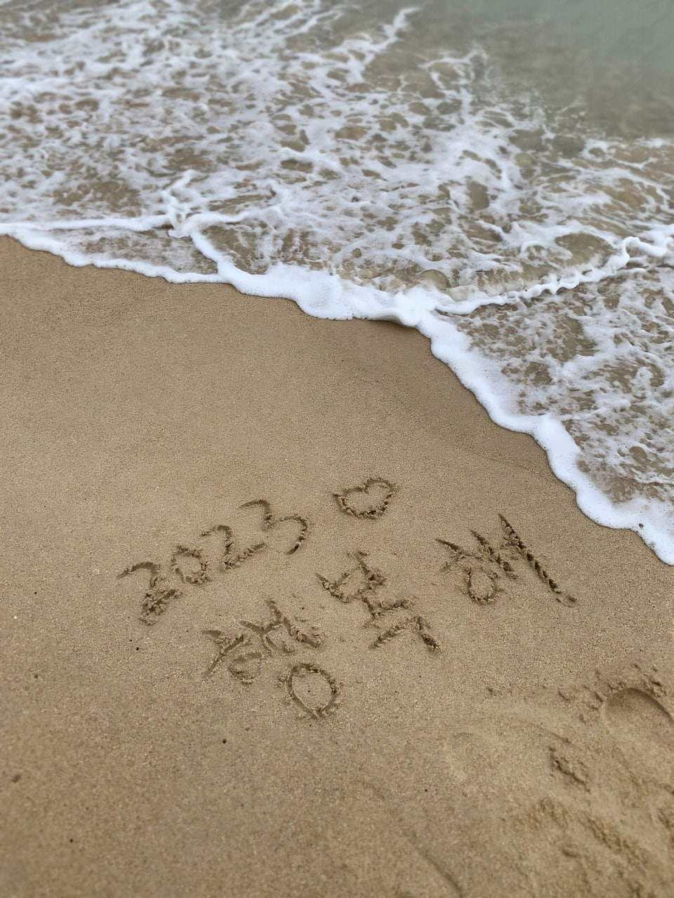

這一次的作業與過往有著非常明顯的不同，對我來說難易度大幅的提升，原本就對於電腦非常的不熟悉且陌生，操作起來真的非常的辛苦。
不過這也算是第一次學習如何編寫網頁，自己親力親為的完成一個簡單的網站，非常的有成就感
本來以為編寫網頁會需要非常多電腦儲備知識或者程式語言的基本功力，想不到經過老師的一番教導之後卻是如此輕而易舉的完成了這項作業
如果往後仍有這個機會能夠向老師繼續學習，必然會用120％的心力與精神的往老師制定的目標前進

麻婆豆腐
蒜泥白肉
心得分享